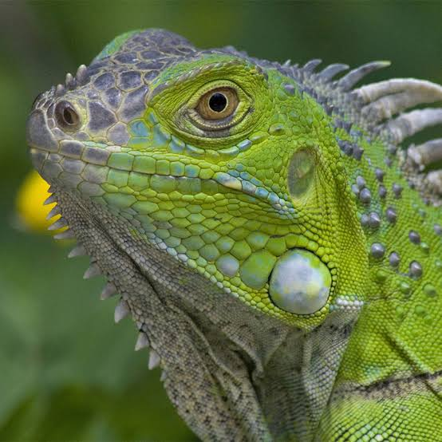
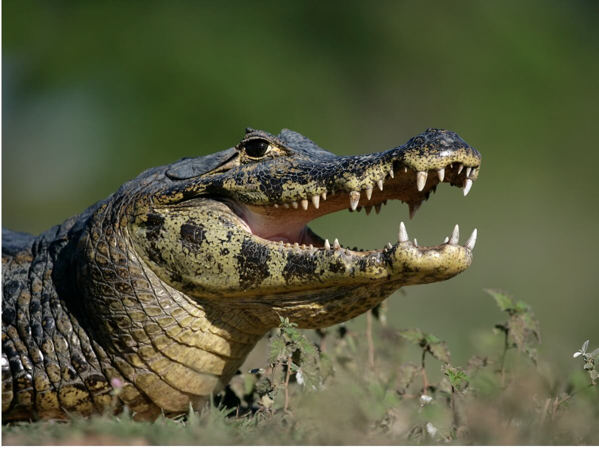
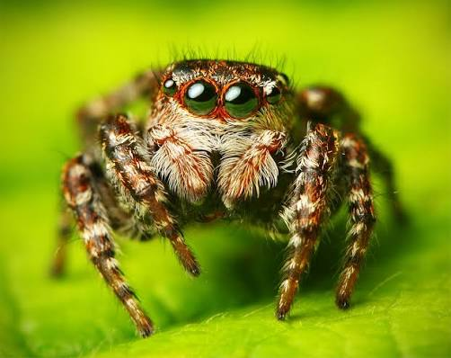
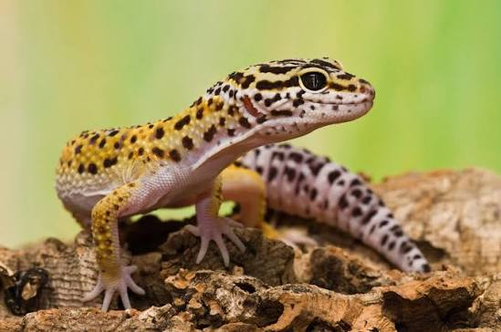

Reptinfo


Caiman
Reptil carnivoro conocido por su gran tamaño y su cresta dorsal. Vive principalmente en zonas tropicales

Araña saltarina
Las atraen principalmente la presencia de presas (como moscas, mosquitos y pequeños insectos), los lugares cálidos y soleados.

Gecko Leopardo
Reptil insectivoro conocido por su gran tamaño y su cresta dorsal. Vive principalmente en zonas tropicales

Rana Dardo
Anfibio insectivoro conocido por su gran tamaño y su cresta dorsal. Vive principalmente en zonas tropicales

Camaleon
Los camaleones (familia Chamaeleonidae) son una fascinante familia de reptiles escamosos famosos por sus adaptaciones físicas.